3. Computer Controlled Cutting¶
This week I worked on using different computer controlled cutting devices and designing a parametric design kit.
You can find the files used this week here.
Group Project - Laser Cutter Characteristics¶
My group’s project for Week 3 can be found here.
I worked with Landon Broadwell, Ryan Zhou, and Evan Park.
The group portion of Week 3 was to describe the following characteristics of our lab’s laser cutter: focus, power, speed, rate, kerf, joint clearance and types.
I worked on the kerf and joint types.
To measure the kerf of the laser cutter, I designed 10 squares in CorelDRAW measuring 25.4 x 25.4 mm. When cut, I then measured the widths and heights of each square, and I took the average of their values. Finally, I subtracted that value from 25.4 mm to get the approximate kerf.
For joint types, I analyzed the hold, durability, and ease of implementation for each of them.
Vinyl Cutter - Sticker¶
I decided on my sticker design with two colleagues: Collin Kanofsky and David Vaughn.
We settled on making each of our stickers represent a character from the video game Among Us. I chose mine specifically to represent an Among Us character with its tongue out. Here is the image I used:
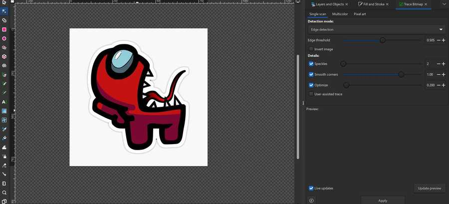
I first imported the image into Inkscape. I was slightly confused on how to create a bitmap for the design since when I tried, it would only to the outline of the entire image rather than separating it by color. Eventually, I managed to get each color to separately outline, but there were two lines for each when there should have been one.

I manually deleted each repeating path, which was slightly tedious but fairly easy to do. I then set the line width to hairline for each path, and I exported the file as a .dxf file so I could import it into Silhouette Studio.
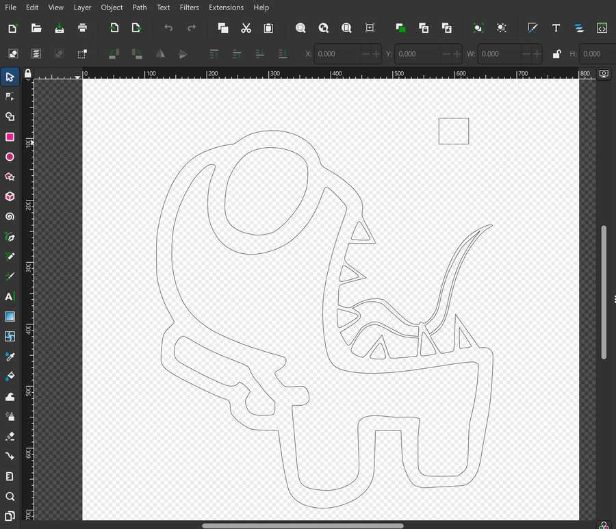
From this point on, I used this tutorial on how to make multi-color vinyl decals.
I imported the file into Silhouette without any problems, and I proceeded to gather a white sheet for the teeth, blue sheet for the goggle, red sheet for the basic body color, and black sheet for the outline. I placed each sheet on a cutting sheet, and I used a CAMEO Vinyl Cutter to cut the parts pertaining to that color.
Here is a video of cutting the black part of the sticker.
I weeded each of the colored sheets so that only the parts that I wanted transfered remained.
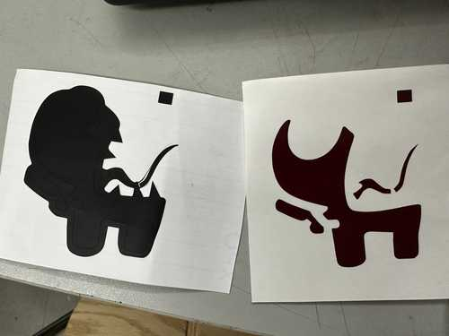

After that, I used transfer tape to move the red part of the sticker on the black part, and since the blue part was short, I moved it on manually without transfer tape. I also decided against using the white teeth due to their small size and the fact that I could simply make them transparent.
Red Part on Black Part:
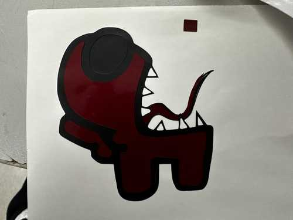
Once I transposed each of the sheets on each other, I placed a final layer of transfer tape on them.
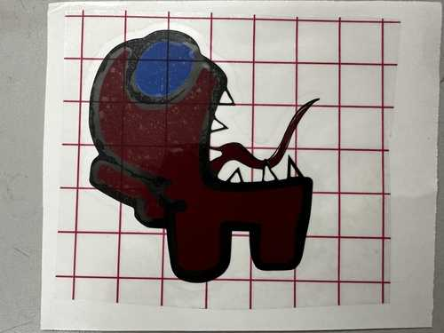
I then applied the sticker to the window where all of the Charlotte Latin Fab Lab’s stickers had gone, and I ensured that my sticker was next to the other Among Us Stickers.
My Final Sticker:
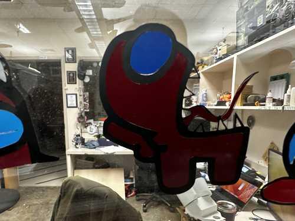
Other Among Us Stickers:
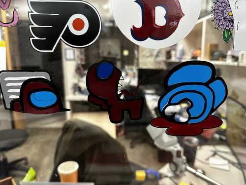
Parametric Design Kit - Design File¶
I used Fusion 360 to parametrically design my kit. When starting to think about what pieces I would design, I defined parameters for groove depth, groove width, and side length for the pieces. I determined the groove width using the joint clearance portion of the group part (3.5 mm). Here are the respective values for each parameter:
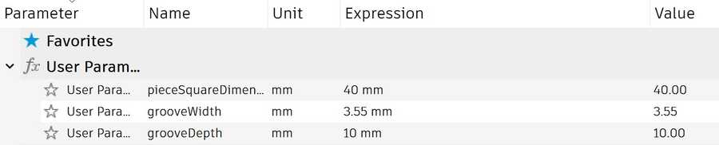
When actually designing pieces, I first made a square piece since it seemed simple, and I could model other pieces relative to it. My plan was to create a single side then use a circular pattern to rotate that side 4 times and create a square. I created two horizontal lines with a groove going downwards. I then added a chamfer to the outside corners of the groove, and I set constraints so that each dimension was relative to the parameters and other dimensions.
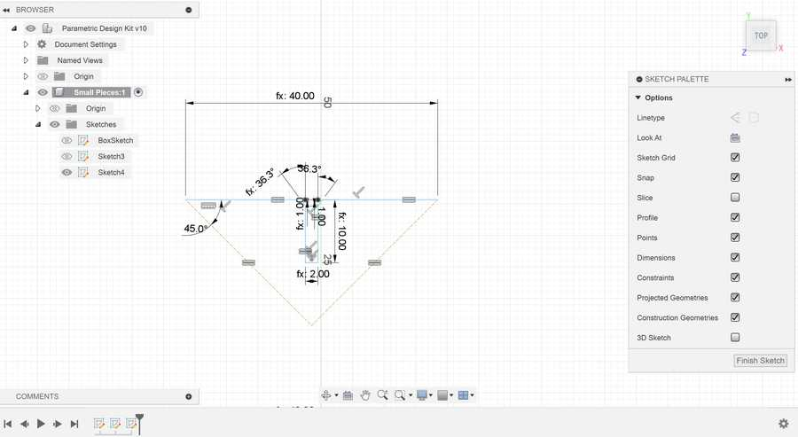
Finally, for the circular pattern, I needed to figure out how to find a center point to revolve around. To solve this, I created two construction lines connecting to each other and the ends of the edge. I set the angle between them and the edge to 45 degrees and set them equal to each other, and their intersection was the center point. I finished the square by using a circular pattern to revolve the edge 4 times around the center.
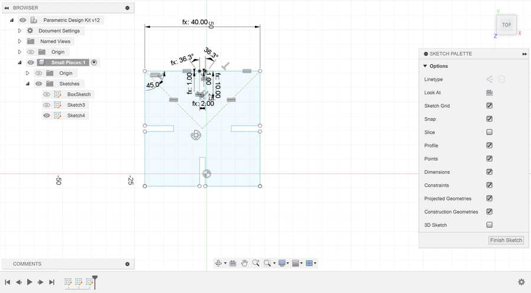
The other shapes that I created were primarily based on the edge used to create the square piece. I only had to change two things to accomodate for regular polygons of larger size: changing the angle of the construction lines and changing how many of the edge I would duplicate with the circular pattern. For the angles, I used the formula: (n - 2) * 90 / 2 to find the angle in degrees, where n is my desired amount of sides. With this formula, I created a regular pentagon, hexagon, and decagon (note that the side lengths of each shape are the same as the square due to that being unchanged).
Pentagon:

Hexagon:
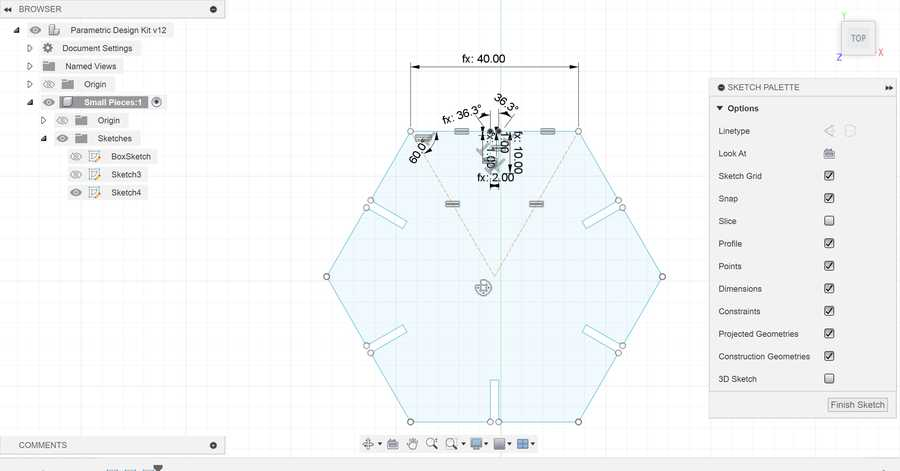
Decagon:

Next, I designed connectors for each piece type. I started by creating a simple linear connector with grooves on opposite sides of it and a length the same as the square piece. I just designed one half of the connector and mirrored it along the center to the other side.
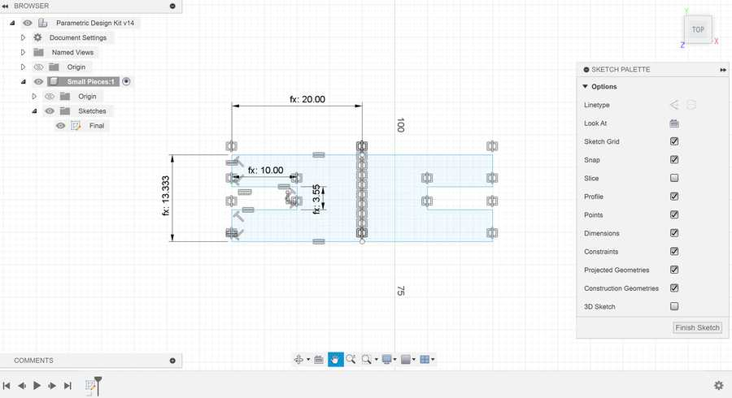
I also wanted to design a connector that could bend easily. I followed this tutorial to get a general idea of how it could work. I copied the previous connector piece and made it roughly 2.5 times longer. Next, I added lines on the alternating between the edge and center of the cardboard to create the bendable parts.

Parametric Design Kit - Laser Cutting¶
Once I was done designing my pieces in Fusion 360, I exported the sketch as a .dxf file. After exporting, I used the computer linked to a Fusion M2 Epilog Laser Cutter to open the file in CorelDRAW, and I sent the job to the printer as it was (each piece next to each other and one of each). I laser cut my pieces on cardboard.
The initial cut finished with no problems, and suprisingly, the slots for my pieces fit perfectly into each other. I designed a quick shape with my pieces as a placeholder.
Here are the initially cut pieces (the small connector fell through the laser cutter bottom):
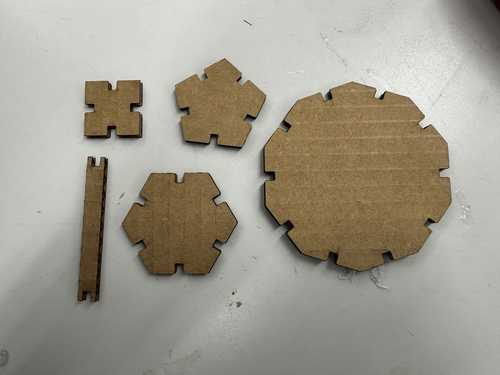
Placeholder shape:
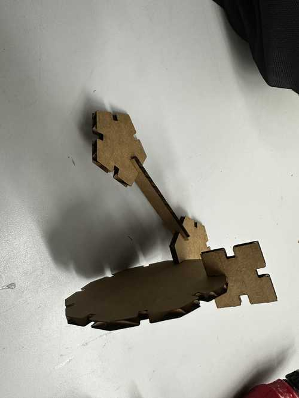
I then edited the CorelDRAW file to include multiple of the same pieces: 3 bendable connectors, 12 short connectors, 4 square pieces, 3 pentagonal pieces, 2 hexagonal pieces, and one decagonal piece. I used the same process as earlier to laser cut the pieces on cardboard, and all of them came out well.
With some pieces, since I had 3 bendable ones, I made a fishing pole out of them.
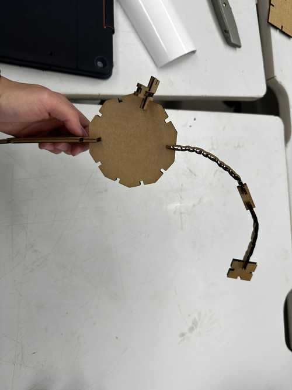
Then, with all of my pieces, I tried to make a humanoid shape (somewhat successfully).
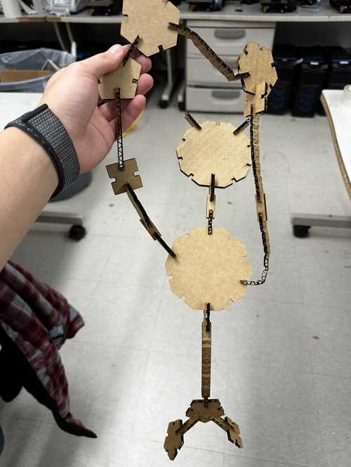 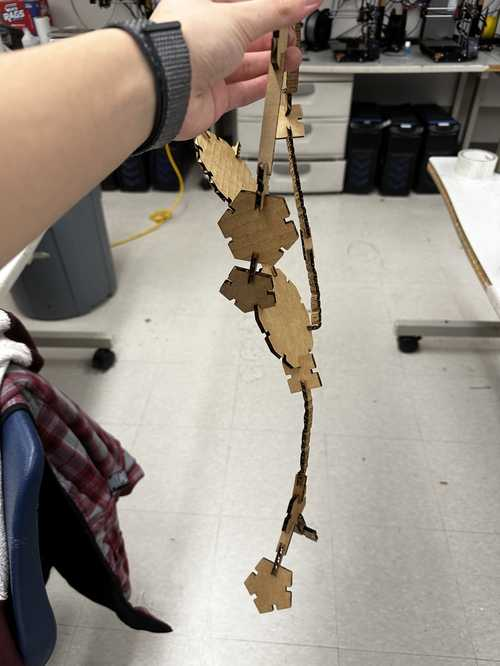
Reflection¶
This week was probably the most fun I have had so far. It improved my skills in using parameters in modeling to allow for ease of change, and it also generally made me more accustomed to CAD programs. I also learned how to make a multi-color vinyl decal and had some more experience with vector programs like Inkscape and CorelDRAW. I did not enjoy making the vinyl sticker as much, but it was nice to collaborate with my peers. I also learned about kerf of a cuttin tool for the first time, which will most likely help in future designs.
Credits¶
All credits are mentioned where they are used respectively. Once again, credit to Adam Stone for his image resizer.